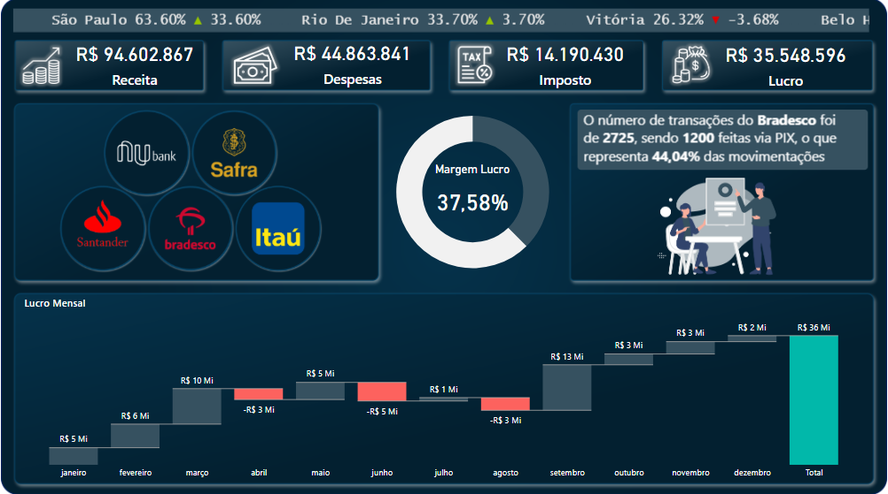

PRODUÇÃO ATIVA
REFRESH AUTOMÁTICO

Gestão Financeira
Power BI + ERP
Dashboard Financeiro
Pergunta respondida: "Para onde está indo cada centavo da empresa e qual é o real lucro líquido após custos fixos e variáveis?"
DRE Gerencial
Fluxo de Caixa
Entradas vs Saídas
Margem Líquida
Inadimplência